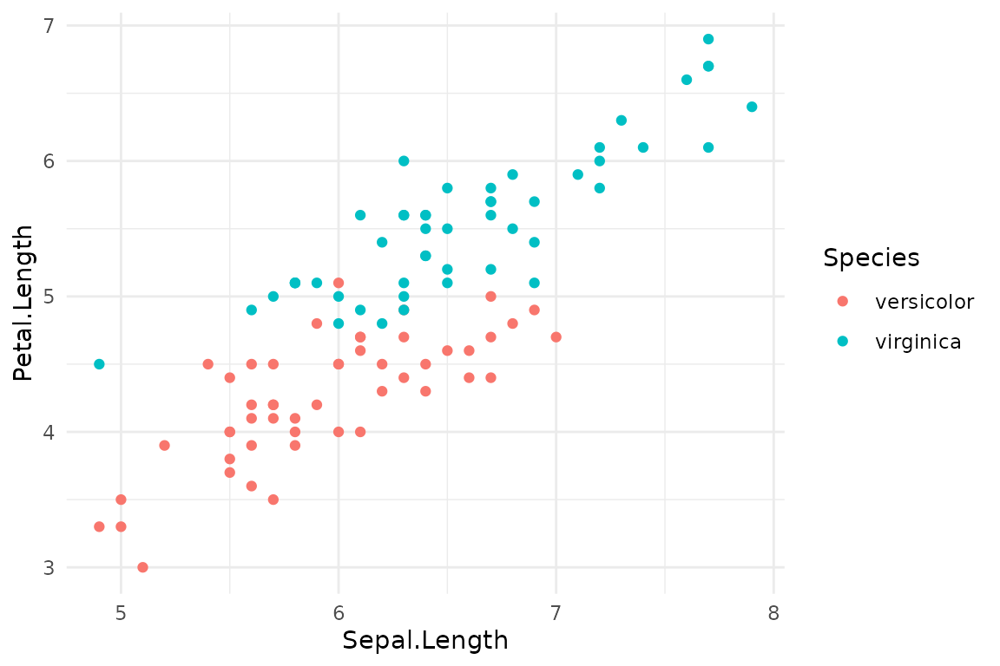

Introduction
This vignette covers the most advanced features of
ggsaveR, focusing on reproducibility and fine-grained
control. We will explore how to embed reproducibility data into PNG
files and how to use the guard argument to bypass global
settings for specific ggsave() calls.
Reproducibility: Embedding Data in PNGs
For maximum reproducibility, ggsaveR can embed the
ggplot object, the R code that generated it, and session
information directly into the PNG file’s metadata. This is controlled by
the ggsaveR.embed_data option.
options(ggsaveR.embed_data = TRUE)When this option is TRUE, any plot saved as a PNG will
contain this extra information. ggsaveR captures the code
passed as the plot argument.
out <- file.path(tempdir(), "plot_with_embedded_data.png")
# The plot object and the code below are embedded in the PNG file
ggsave(
out,
iris |>
subset(Species != "setosa") |>
ggplot(aes(Sepal.Length, Petal.Length)) +
geom_point(aes(color = Species)),
width = 6, height = 4
)
#> Embedded reproducibility data into plot_with_embedded_data.png (175.9 Kb)You can then use the read_ggsaveR_data() function to
extract this information from the saved PNG.
# Read the embedded data
embedded_info <- read_ggsaveR_data(out)
names(embedded_info)
#> [1] "ggsaveR_version" "plot_object" "plot_data" "session_info"
#> [5] "plot_call"
# View the code that generated the plot
cat(embedded_info$plot_call)
#> ggplot(subset(iris, Species != "setosa"), aes(Sepal.Length, Petal.Length)) +
#> geom_point(aes(color = Species))
# The data behind the plot
head(embedded_info$plot_data)
#> Sepal.Length Sepal.Width Petal.Length Petal.Width Species
#> 51 7.0 3.2 4.7 1.4 versicolor
#> 52 6.4 3.2 4.5 1.5 versicolor
#> 53 6.9 3.1 4.9 1.5 versicolor
#> 54 5.5 2.3 4.0 1.3 versicolor
#> 55 6.5 2.8 4.6 1.5 versicolor
#> 56 5.7 2.8 4.5 1.3 versicolorYou can even replot, or restyle, the original ggplot object:
embedded_info$plot_object + theme_minimal()
If you save a plot that is stored in a variable
(ggsave("plot.png", p)), the captured code is just the name
p. The plot object and its data are still embedded in
full.
Choosing what to embed
The ggsaveR.embed_metadata option selects the parts to
embed: any of "plot", "data",
"session_info" and "call". For example, to
keep files small and only record the code and R session:
Privacy and security
- A PNG with embedded data contains the complete data frame behind the plot, including columns that are not shown. For plots created inside a function, the plot object also carries every object in that function’s environment. Do not publish such files if the data are sensitive.
-
read_ggsaveR_data()restores a serialized R object. LikereadRDS()andload(), only use it on files from a source you trust.
# Reset the option
options(ggsaveR.embed_data = FALSE)The Escape Hatch: guard = TRUE
Sometimes you have global options set but need to bypass them for a
single, specific ggsave() call. The
guard = TRUE argument serves as an “escape hatch,” telling
ggsaveR to step aside and pass the call directly to the
original ggplot2::ggsave.
Use Case: Preventing Sensitive Data Embedding
Imagine you have ggsaveR.embed_data = TRUE set globally
for reproducibility. However, one specific plot is generated from
sensitive or very large data that you do not want to embed in the PNG
file.
# Global setting for reproducibility
options(ggsaveR.embed_data = TRUE)
# This plot contains sensitive information
sensitive_data <- data.frame(
x = rnorm(10),
y = rnorm(10),
secret = "Confidential Information"
)
p_sensitive <- ggplot(sensitive_data, aes(x, y)) + geom_point()
# Use guard = TRUE to save the plot without embedding the data
# This call will use the standard ggplot2::ggsave behavior
ggsave("sensitive_plot.png", p_sensitive, guard = TRUE)The guard = TRUE argument ensures that for this one
call, none of the ggsaveR enhancements are applied. The
plot will be saved as a standard PNG, without any embedded data, and it
will overwrite any existing file with the same name, regardless of the
ggsaveR.overwrite_action setting.
Warning: Using
guard = TRUEin a script requires that theggsaveRpackage is loaded. If it is not, the originalggplot2::ggsavewill throw an “unused argument” error forguard.
These advanced features make ggsaveR a powerful tool for
managing complex data analysis workflows, enhancing reproducibility
while providing the flexibility to handle exceptions.